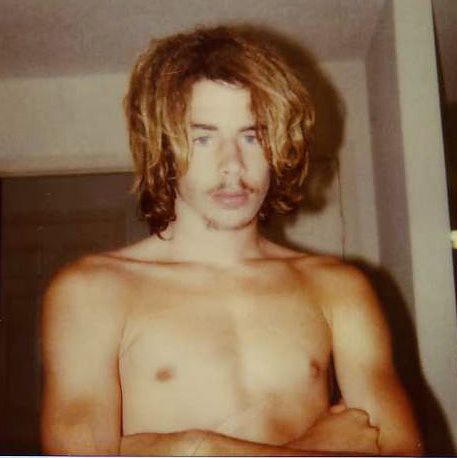

About / Sysop
Knight Shadow
I used to be a SysOp (System Operator, someone who runs a BBS) back in the late 80’s when I was a teenager. This year (2026 at time of writing) I was curious to see if there were any still around and was surprised that there were and some were still pretty active! I logged into aBSiNTHE and was met by the very kind and accommodating SysOp named aNACHRONiST who dropped into chat and had a nice conversation with me. I went to $20 for Beers which is another very active site with all sorts of message bases and a gargantuan file area. I found that the SysOp of that board, Paulie420, has a YouTube channel called Tech Heart and he is such an interesting character who is super enthusiastic about tech. I also found the board Distortion (SysOp is Jack Phlash) which has its roots in the old underground scene that I too was a part of back in the day.
I left the BBS scene when I was 18 years old (you can read more of my story on The Boneyard under System Bulletins), and now at age 53 found my way back into it again. Here in the current day, I now find myself as a Software Engineer of over 25 years and a single father of two adult children, reminiscing about the old days, and wondering what the future will bring. The older I get the faster it all seems to go.
My interests include:
- Japan and the Japanese Language
- Retro Technology
- The 1980s
- Surfing
- Nature
- Yoga
- Van Life
- Martial Arts
- Songwriting
- Movies, especially horror, fantasy, and sci-fi.
- Music such as Bob Marley, Tool, Jane's Addiction (old stuff), Iron Maiden, TWRP, and BabyMetal.
- True Crime
- Altruism
- Cats
- Advaita Vedanta
The Early Days
Here is a photo from 1990 when I was 17 years old and the SysOp of a BBS called Knight Shadow's Grotto.
Oh how the years have gone by.
